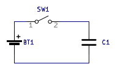

The next component we will look at is capacitors. Fundamentally, a capacitor is two metal plates separated by a dielectric or insulating material. What happens when we apply a voltage source across a capacitor like so?
Before the capacitor is connected, the plates of the capacitor will be neutrally charged. However, once a voltage source is connected, charge will be pushed/pulled as much as possible until one of the plates is positively charged and one of the plates is negatively charged. This happens nearly instantly while the voltage source is being connected. Once this connection is complete, the circuit is in steady state, no charge moves, and no current flows.
The equation for a capacitor in this steady state is shown below.
Like resistors, you can also reduce series and parallel combinations of capacitors.
The series reduction formula is as follows:
Ceq = 1/(1/C1 + 1/C2 + ...)
And the parallel reduction formula:
Ceq = C1 + C2 + ...
As you can see, this is opposite of how resistors are reduced. I won't bother deriving these
here, but it is fairly self evident why this is the case for parallel capacitors, and a little
less self evident for series. So you can think about it.